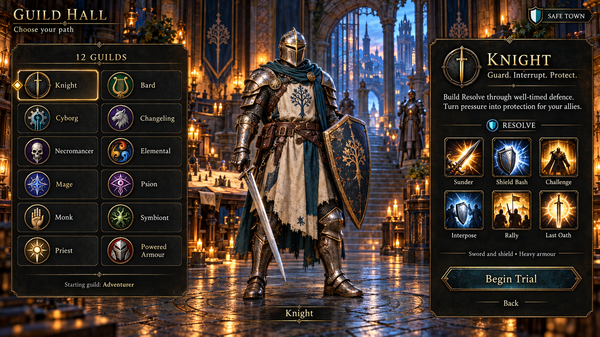

Light, danger and identity.
A warm home, a dangerous road, and the first full view of a Knight establish the visual target.
Concept art · awaiting reviewThe three initial screen concepts explore Highcross, an encounter in Briar March and the guild selection screen. Warm brass and lantern light meet blue dusk, wet stone and weathered materials. The world is elaborate, but the character and attack lane must remain readable.



Town protection appears as a shield and the words SAFE TOWN. Outside it, OPEN PVP and a hostile-player cast make the rules visible. The next production pass must preserve that clarity when four players and several enemies use abilities together.
The guild screen includes all twelve disciplines. Only the Knight has a complete full-body design so far; the other models, forms and animation sets remain production work. Ability icons also need one consistent mapping across screens.